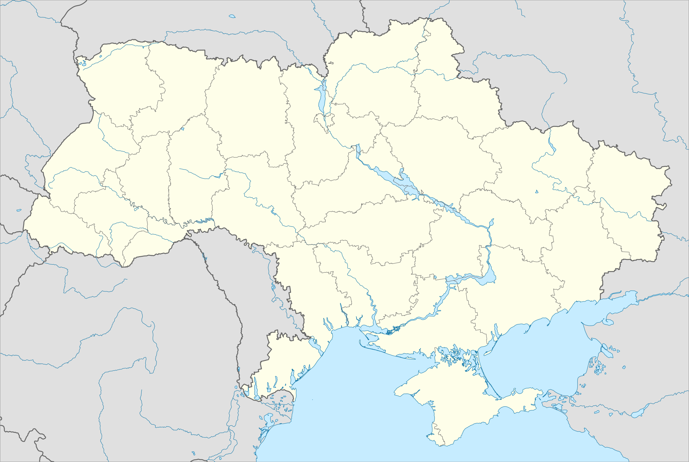
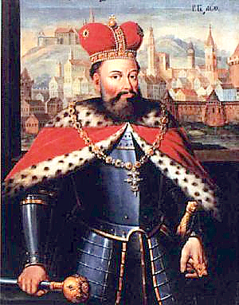
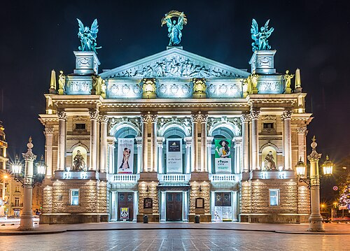
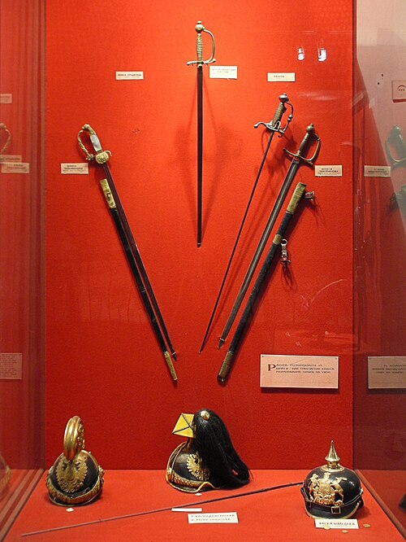
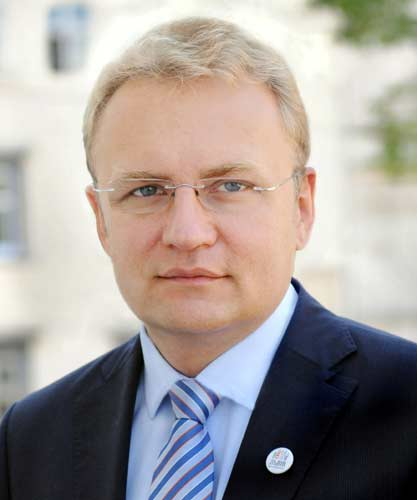

Географія
Львів розташований у центральній частині Львівської області, у східноєвропейському часовому поясі на 24 меридіані; місцевий час відстає від поясного на 24 хвилини. Площа міста — 148.95 км². Львів знаходиться на відстані близько 70 км, від центру міста, до державного кордону з Польщею, на стику Львівського плато, горбкуватого Розточчя і низинної Надбужанської котловини. Через нього проходить пасмо пагорбів Головного європейського вододілу, який розмежовує річки Балтійського та Чорноморського басейнів (відповідно річок Західного Бугу та Дністра). Середня висота Львова над рівнем моря — 289 метрів. Найвища точка міста — гора Високий замок (413 м над рівнем моря). Історично Львів було збудовано на річці Полтві (притока Бугу), але у XIX столітті русло річки прокладено через головний міський колектор (під проспектами Шевченка, Свободи та Чорновола). Горішня частина Стрийського парку (2009) У Львові понад 20 парків і зелених зон, 2 ботанічні сади і 16 пам'яток природи. Два парки є пам'ятками садово-паркового мистецтва національного значення, один — місцевого. У міських межах розташований регіональний ландшафтний парк «Знесіння» — природоохоронна територія площею понад 300 га, яка має максимально наближену до природних умов екосистему. У межах міста поширені верхньокрейдові, верхньоміоценові і четвертинні відклади: Верхньокрейдові відклади представлені товщею маастрихтських світло-коричневих мергелів, потужністю близько 50 м. Ці відклади є регіональним водотривом. Верхньоміоценові відклади представлені (знизу догори): миколаївськими пісками і пісковиками, товщею літотамнієвих вапняків із пропластками гіпсів. Ці відклади незгідно залягають на верхньокрейдових і переважно розвинуті на головному вододілі. Потужність верхньоміоценових відкладів сильно змінюється, а у багатьох місцях ці відклади повністю знищені дочетвертинною ерозією. Четвертинні відклади представлені переважно дольдовиковим лесом, пісками, травертинами і постльодовиковими болотними суглинками і торфовищами в районі Білогорщі і долині Полтви. У Львові поширені чорноземи, елювіальні і торфово-болотні ґрунти.

Історія
Галицько-Волинське князівство Докладніше: Середньовічний Львів Король Лев I Данилович на тлі Львова. Портрет XVII століття Археологічні розкопки свідчать, що територія сучасного міста була заселена ще у V столітті[22]. Наприкінці X століття ці землі ввійшли до складу Русі, зокрема удільних Галицького, а з 1199 року — Галицько-Волинського князівств. Засновником міста традиційно вважають короля Данила, який назвав укріплене поселення на честь свого сина Лева[23][24][25][26]. Л. Войтович на основі білорусько-литовських літописів і авторів XVI—XVIII ст. стверджує, що місто заклав Лев Данилович. Місто розташувалося на межі належних Левові Перемишльського та Белзького князівств[27]. Ярослав Ісаєвич припускає, що Данило Романович здійснював загальне керівництво будівництвом, а Лев Данилович керував роботами безпосередньо на місці[28][29]. Л. Войтович зазначає, що Лев вже 1245 року у битві під Ярославом командував окремим полком, отже, мав власний уділ, у якому міг закладати міста й без дозволу батька[30]. В «Енциклопедії українознавства» час заснування датують кінцем 1240-х або початком 1250-х[31]. Краєзнавець Мечислав Орлович припускав, що місто засноване через цілковиту руйнацію княжого Галича монголо-татарами 1240 року[32], хоча Галич було зруйновано 1241 року[33]. Перша письмова згадка про Львів міститься у Галицько-Волинському літописі і датується 1256 роком, від якого і ведеться міське літочислення. Руський Львів складався з дитинця (Високого замку), королівської резиденції (Низького замку) та укріпленого подолу в районі сучасної площі Старий Ринок. 1272 року син короля Лев Данилович, який сприяв розвитку міста (зокрема, визначив для новоприбулих три дільниці: на сході — руську, на півночі — для вірмен для татар, на півдні — для юдеїв[34]) переніс столицю Галицько-Волинської держави з Холма до Львова. Тут також, ймовірно, перебував фактичний осідок митрополитів Галицьких, настоятелів окремої митрополії Константинопольського патріархату, що існувала з перервами від 1303 до 1401 року. Після смерті галицько-волинського князя Юрія II Болеслава 1340 року волинські бояри проголосили правителем Дмитра-Любарта Гедиміновича. Того ж року король Польщі Казимир III напав на Львівську і Перемишльську землі; між ним і Любартом почалася «Війна за галицько-волинську спадщину». За цих умов місцеві бояри під проводом Дмитра Дедька взяли владу до своїх рук, спершу визнаючи зверхність Королівства Польського, а з 1341 року — сюзеренітет Дмитра-Любарта Гедиміновича. 1349 року, після смерті Дмитра Дедька, Казимир III удруге захопив Львів і спробував приєднати (за іншими даними приєднав) Галичину до Польщі на автономних правах. 1356 року король Казимир III здійснив повторну локацію міста, перемістивши новий центр на південь від первісного, княжого граду[35]. Поруч із руським подолом запрошені королем будівничі за німецькими зразками звели нове готичне місто-фортецю, поділене на квартали, з Ринком посередині. Більшість його населення становили німці; українці-русини жили переважно в передмістях. Існували самоврядні вірменська і єврейська громади. 1356 року король Казимир III надав Львову «маґдебурзьке» право самоврядування. З часів Казимира і до початку 15 ст. карбував монети Львівський монетний двір. 1370 року, за договором між Казимиром III і угорським королем Людовиком, Галичина перейшла під владу угорського монарха, який хотів включити її до складу Королівства Угорського, зустрівши опір польських можновладців. 1387 року донька Людовика, польська королева Ядвіґа Анжуйська, після військового походу захопила ці землі для Польщі. 1379 року Львів, що лежав на важливому відтинку Великого шовкового шляху з Криму до Німеччини, отримав «абсолютне складкове право»[36]. Воно передбачало, що всі купці, які везли товари через місто, були зобов'язані впродовж двох тижнів виставляти свій крам на продаж у Львові, а вже потім могли їхати далі. Місто стало важливим ремісничим і торговельним центром. Широко знаними були ярмарки на день св. Аґнеси (21 січня) та св. Маргарити (13 липня), пізніше святоюрські[36]. 1434 року автономія Галичини як Королівства Руського була скасована, а на більшості його земель утворено Руське воєводство з центром у Львові. У XV ст.[37] Львів був Лемберґом: місто мало «німецьке обличчя», німецькою мовою «ґмінна рада» видавала ухвали, велися дискусії, виголошувалися проповіді в костелах. Полонізація міста почалася за правління двох останніх Ягеллонів[38].

Культура
1795 року у Львові було відкрито перший в Україні професійний театр. 1842 року відкрито Театр Скарбека, тоді — третій за розмірами в Європі; 1900 року з'явилася Львівська опера — один із найгарніших театрів країни, зображений на двадцятигривневій купюрі. У місті діє 8 професійних театрів: опери та балету, драматичний імені Марії Заньковецької, драматичний імені Леся Курбаса, драматичний імені Лесі Українки, духовний «Воскресіння», естрадних мініатюр «І люди, і ляльки», для дітей та юнацтва та ляльковий[144], 6 театрів-студій та цирк. Місто є значним осередком театрального життя: щороку тут проходять два театральні фестивалі: «Золотий лев», найбільший театральний фестиваль країни, та «Драбина», фестиваль молодого аматорського театру. Щороку в жовтні у місті проходить театралізований карнавал[145]. На великі свята проводять вуличні вистави на ходулях та вогняні шоу. У Львові діє 9 кінотеатрів: «Планета кіно», «Кінопалац», «Копернік», «Центр Довженка», «Львів», «Сокіл» та «Київ»[146]. Перший належить мережі «Планета кіно IMAX», три наступних входять до мережі «Кінопалац», натомість три останні є власністю держави. Завершено реконструкцію «Соколу», щодо «Львова» почалися обговорення відносно реконструкції[147]. Однак через брак фінансування починаючи з 1990-х років багато кінотеатрів було ліквідовано. Також у місті діє перший в Україні автомобільний кінотеатр «Кінопарк». Разом із цим, Львів часто стає знімальним майданчиком: місто «грає роль» європейських столиць, де вартість зйомок значно дорожча[148]. Щороку у Львові проходять фестивалі «Wiz-Art» (фестиваль короткометражних фільмів) та «Кінолев» (фестиваль «незалежного кіно»). Зі Львова походять відомі актори Пол Муні, Лео Фукс, Берта Каліч та інші. Основними осередками музичного життя міста є театр опери та балету, філармонія і будинок органної музики, де міститься найбільший в Україні орган[149]. У Львові поки немає великого концертного залу, нерідко концерти відбуваються в державному цирку або в критому велотреку при стадіоні СКА. Щороку у Львові проходить безліч музичних фестивалів: «Свято музики у Львові», «Велика коляда» (колядки), «Флюгери Львова» (етно-джаз), «Віртуози» (класична музика), «Львів Стародавній» (фестиваль середньовічної культури), «Діапазон» (органна музика), «Етновир» (етно), «Контрасти» (сучасна класична музика), фестиваль давньої музики, Jazz Bez і Leopolis Jazz Fest (джаз), Stare Misto (рок), «Українська пісня»[150]. У місті діють академічний камерний оркестр «Віртуози Львова», хорова капела «Дударик», муніципальний оркестр «Галицькі Сурми», муніципальний хор «Гомін», камерний оркестр «Леополіс», симфонічний оркестр філармонії. З містом пов'язане життя музикантів, композиторів і співаків Соломії Крушельницької, Франца Ксавера Моцарта, Філарета Колесси, Мирослава Скорика, Руслани Лижичко, Святослава Вакарчука, Володимира Івасюка та інших. 1986 року (ще в часи перебудови в СРСР) у Львові виникла одна з перших у Союзі неформальних громадських організацій «Львівський рок-клуб». Клуб відіграв значну роль в українізації рок-музики в Україні, а з його середовища вийшли такі відомі гурти: «Брати Гадюкіни», «Лесик Бенд», «Плач Єремії», «999», «Білий загін» тощо. Львівщина дала початок багатьом відомим гуртам, як-от «Океан Ельзи», «Скрябін», «Піккардійська терція», «Плач Єремії», «Мері», «Оратанія», «Механічний апельсин», ROCKOKO та інші[151].

Музеї та картинні галереї
Для відвідувачів у місті відкриті двері понад 40 музеїв. Серед них: Львівський історичний музей, другий за розмірами історичний музей України[152]; Національний музей, одна з найвизначніших[153] в Україні скарбниць українського мистецтва, заснована митрополитом Шептицьким; Львівська галерея мистецтв, один з найбагатших музеїв України, у минулому очолюваний відомим мистецтвознавцем Борисом Возницьким[154]; Етнографічний музей, єдиний такого типу в Україні; Національний меморіал «Тюрма на Лонцького», перша в Україні в'язниця-музей. Популярними серед туристів є також «Шевченківський гай», Аптека-музей, «Арсенал», Палац Потоцьких та інші. У Львові також багато галузевих музеїв, як, наприклад, музеї пива, пошти, друкарства, скла, релігії тощо. Є також певна кількість меморіальних будинків-музеїв, присвячених видатним мешканцям міста. Природознавчий музей, який володіє однією з найбагатших у Східній Європі експозицій, сьогодні закритий на реконструкцію. У Львові діє понад 20 художніх галерей, найвідомішими з-поміж яких є «Дзиґа», «Зелена канапа», «Сливка», «Музей Ідей» та інші. Загалом, музейні фонди Львова нараховують 36,5 тисяч експонатів, 2009 року музеї міста відвідало 366,5 тисяч осіб[155]. У листопаді 2020 року у Львові відкрили Львівський муніципальний мистецький центр — першу міську інституцію, створену на кошти з міського бюджету та націлену на втілення проєктів у сфері сучасного мистецтва[156].

Адміністрація
Львів поділяється на 6 адміністративних районів: центральна частина належить до Галицького району, західна — до Залізничного, північна — до Шевченківського, східна — до Личаківського, південно-східна — до Сихівського, а південна — до Франківського. Разом з цим, у вжитку збереглися давні назви частин міста та сільських місцевостей, які увійшли з часом до складу міста, як-то Левандівка, Білогорща, Збоїща, Рясне, Майорівка, Вулька, Новий Львів, Снопків, Боднарівка, Пирогівка, Козельники, Сихів тощо. Деякі з них відображені сьогодні у назвах вулиць. У підпорядкуванні Львівської міської ради перебувають місто Винники та селища Брюховичі й Рудне.
УстрійДокладніше: Львівська міська рада та Очільники Львова До складу Львівської міської ради входять 64 депутати, яких обирає громада міста терміном на 5 років. З 2020 року у Львівській міській раді представлені 5 політичних партій: «Європейська Солідарність» (26 депутатів), «Самопоміч» (17), «Голос» (8), ВАРТА (7) та «Свобода» (6 депутатів). Виконавчу владу очолює міський голова (мер) та Виконавчий комітет (Виконком), який складається з 6 членів. Йому підпорядковані 6 департаментів, кожен з яких відповідає за певну сферу міського життя: містобудування, економічну політику, фінансову політику, гуманітарну політику, житлове господарство та інфраструктуру, а також департамент розвитку. Сьомий департамент, «Адміністрація міського голови», забезпечує координацію дій виконавчої влади у місті. У кожному адміністративному районі органом виконавчої влади є районна адміністрація[55]. З 2006 року мером міста є Андрій Садовий. Місто поділене на 56 поліційних дільниць, які підпорядковуються Головному управлінню МВС України у Львівській області[56]. У Львові діють слідчий ізолятор № 19 (Бригідки) та виправні колонії № 30, № 48.
